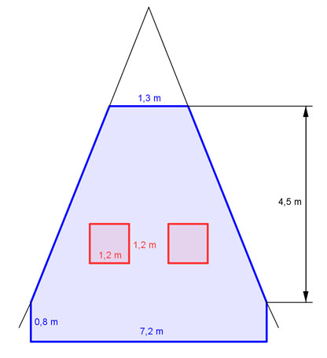

Flächenberechnungen Aufgabe 41 Berechnen Sie die Fläche der Holzverkleidung, wenn Sie mit 20% für Verschnitt rechnen müssen.  Gesamtfläche A = 2 * Trapez + 2 * Dreieck Gesamtfläche = Rechteck + Trapez - 2 * Quadrat 7,2 m + 1,3 m Ages = 7,2 m * 0,8 m + ----------------- * 3,7 m - 2 * 1,2 m * 1,2 m 2 Ages = 5,76 m² + 15,725 m² - 2,88 m² = 18,6 m² A mit 20% Verschnitt = 1,2 * 18,6 m² = 22,3 m²